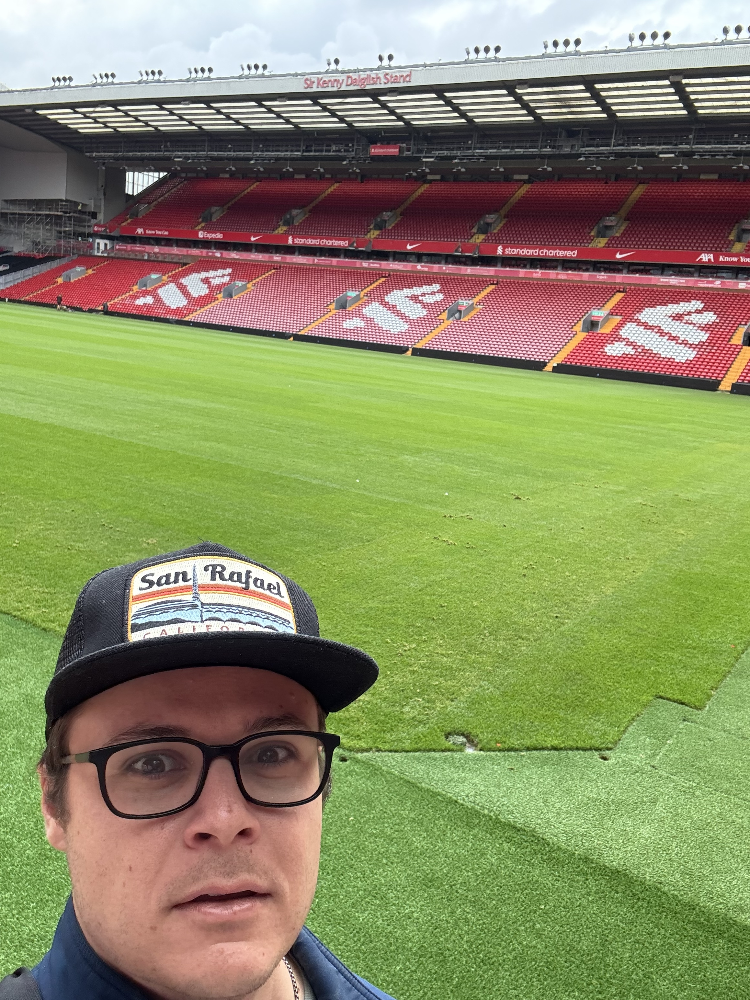

Dublin Trip
Dublin was my introduction to Europe. Click to read more.

Last summer, I embarked on a journey to explore the world and experience new cultures. I had never been to Europe, only Costa Rice, the Caribbean, and Canada. I went to 8 European countries in 11 weeks. It was an unforgettable once-in-a-lifetime trip. I wanted to get out of my comfort zone and solo travel. I learned a lot about myself and the rest of the world. Follow along as I share my travel experiences across Europe during the Summer of 2024.

This is a panoramic picture I took at Francisco Park in San Francisco, CA. It is my favorite park in the world (so far).
This is where I will share my travel experiences and adventures. Check out my blog posts to learn more about the amazing places I've visited.
Dublin was my introduction to Europe. Click to read more.
Check out my trip to the home of The Beatles + more. Click to read more.
Discover the charm and history of London through my recent trip. Click to read more.
Belgium had the best beer. Click to read more.

Went to the biggest festival in the world. Click to read more.
Had an amazing time in this famous city. Click to read more.

Sailed around Croatia to islands and coastal towns. Click to read more.
The most surprising city I visited. Click to read more.

Went to the towns where my last name comes from. Click to read more.
Traveled through small towns in Germany and Berlin. Click to read more.

Did a guided tour of Sicily with my dad. Click to read more.

A week around the Amalfi Coast and Naples with my dad. Click to read more.

Explored ancient Roman sites and The Vatican. Click to read more.
Volunteered at a winery in central Italy. Click to read more.
Finished my 11-week trip in Florence. Click to read more.